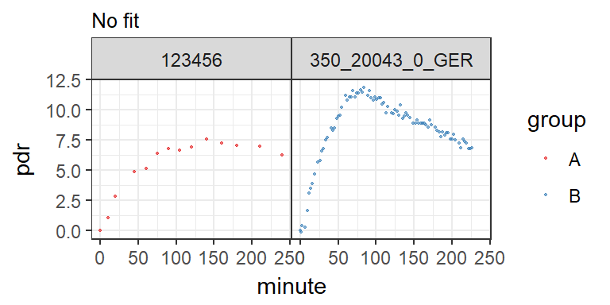
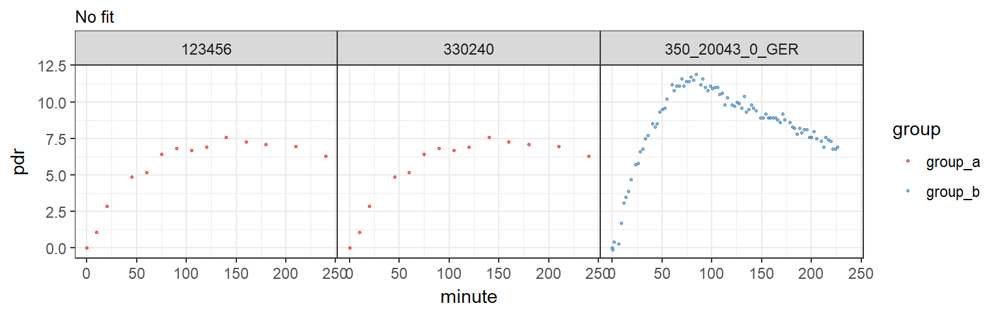

13C data can be imported in generic formats stored in Excel files, and in several vendor-specific formats, e.g. from BreathID and Wagner/IRIS. A collection of sample files with and without errors is available in the directory C:/R/library/breathtestcore/extdata; function btcore_file() retrieves the names and long path of the available data sets.
library(breathtestcore)
head(btcore_file())[1] "350_20023_0_GERWithNan.txt" "350_20043_0_GER.txt"
[3] "350_20043_0_GERBadHeader.txt" "350_20043_0_GERDuplicateTime.txt"
[5] "350_20043_0_GERNoData.txt" "350_20043_0_GERNoT50.txt" btcore_file("Standard.TXT")[1] "C:/R/library/breathtestcore/extdata/Standard.TXT"When you know the format, you can read in the data using the special functions, e.g. read_breathid().
When you do not know the format, or when you want to read several different file formats at once, use function read_any_breathtest() which tries to guess the format.
files = c(
btcore_file("IrisCSV.TXT"), # Wagner/IRIS format
btcore_file("350_20043_0_GER.txt") # BreathID
)
bt = read_any_breathtest(files)
# Returns a list of elements of class breathtest_data
str(bt, 1)List of 2
$ :List of 23
..- attr(*, "class")= chr "breathtest_data"
$ :List of 23
..- attr(*, "class")= chr "breathtest_data"
- attr(*, "class")= chr "breathtest_data_list" bt_df = cleanup_data(bt)
str(bt_df)Classes 'tbl_df', 'tbl' and 'data.frame': 101 obs. of 4 variables:
$ patient_id: chr "123456" "123456" "123456" "123456" ...
$ group : chr "A" "A" "A" "A" ...
$ minute : num 0.01 10 20 45 60 75 90 105 120 140 ...
$ pdr : num 0 1.11 2.86 4.87 5.19 ...Passing through cleanup_data() returns a data frame/tibble and adds a grouping variable.
To plot data without fitting, use null_fit().
nf = null_fit(bt_df)
str(nf)List of 1
$ data:Classes 'tbl_df', 'tbl' and 'data.frame': 101 obs. of 4 variables:
..$ patient_id: chr [1:101] "123456" "123456" "123456" "123456" ...
..$ group : chr [1:101] "A" "A" "A" "A" ...
..$ minute : num [1:101] 0.01 10 20 45 60 75 90 105 120 140 ...
..$ pdr : num [1:101] 0 1.11 2.86 4.87 5.19 ...
- attr(*, "class")= chr [1:2] "breathtestnullfit" "breathtestfit" plot(nf) # dispatches to plot.breathtestfit
To add new formats, override breathtest_read_function() and add a new function that returns a structure given by breathtest_data().
Always pass data through function
cleanup_data()to obtain a data frame that can be fed to one of the fitting functionsnls_fit(),nlme_fit(),null_fit()orbreathteststan::stan_fit().
You can add a grouping variable, e.g. for multiple meal types, to compute between group differences of means. Cross-over, randomized or mixed designs (some patients cross-over) are supported.
You must explicitlty state the grouping variable for each single file as shown below. Without names, it is possible to vectorize, e.g. read_any_breathtest(c(file1, file2)), but the ‘c()’ operator used on vectors disambiguates the names by appending numbers.
files1 = c(
group_a = btcore_file("IrisCSV.TXT"), # Use only single file with grouping
group_a = btcore_file("Standard.TXT"),
group_b = btcore_file("350_20043_0_GER.txt")
)
# Alternative syntax using magrittr operator
suppressPackageStartupMessages(library(dplyr))
read_any_breathtest(files1) %>%
cleanup_data() %>%
null_fit() %>%
plot()
Function simulate_breathtest_data generates sample data to test different algorithms. Curves with outliers can be generated by setting student_t_df to values from 2 (very strong outliers) to 10 (almost gaussian).
set.seed(212)
data = list(meal_a = simulate_breathtest_data(n_records = 3, noise = 2,
student_t_df = 3, missing = 0.3),
meal_b = simulate_breathtest_data(n_records = 4))
data %>%
cleanup_data() %>%
nlme_fit() %>%
plot()Example of a cross-over design with missing data, outliers and missing record in the red curve.
data$meal_a$record patient_id m k beta t50_maes_ghoos
1 rec_01 38 0.013102211 2.414748 105.9517
2 rec_02 47 0.009183714 1.688157 118.5177
3 rec_03 16 0.010386227 2.248506 127.7612Three data sets are included in R format and can be loaded as shown below. All data were provided by the University Hospital of Zürich; details are given in the documentation.
data("usz_13c")
cat("usz_13c has data from", length(unique(usz_13c$patient_id)), "patients with" ,
length(unique(usz_13c$group)), "different meals")usz_13c has data from 222 patients with 3 different mealsbreathtestcore::usz_13c A large data set used to establish reference ranges for healthy volunteers and patientsbreathtestcore::usz_13c_a Exotic data, a challenge for fitting algorthmsbreathtestcore::usz_13c_d Has gastric emptying half time from MRI as attribute, and can used to compare recorded data with gold standards; see the example in the documentation.